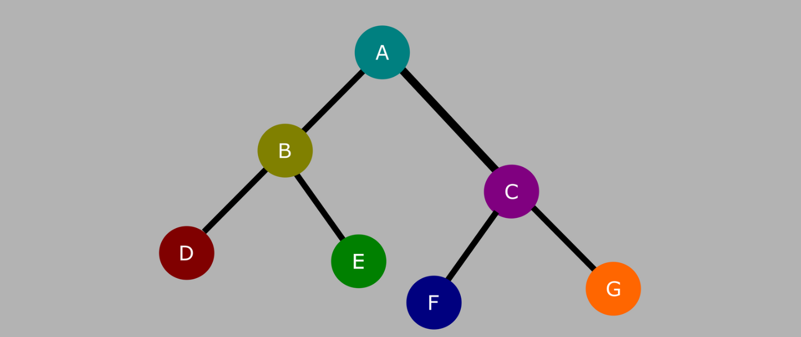

flowchart LR id1[SQL text] --> |SQL parser| id2[SQL statement] id2 --> |Query planner| id3[Logical plan] --> |Query optimizer| id4[Optimized logical plan] --> |Physical planner| id5 id5[Physical plan] --> |Execution| id7[Output]
Preface
Database can be complex, it involves almost all aspects (research communities) of computer science: PL (programming language), SE (software engineering), OS (operating system), networking, storage, theory, and more recently, NLP (natural language processing), and ML (machine learning). The database community is centered around the people who are interested in making the database (the product) better, instead of by pure intellectual/research interests, it is therefore a practical and multi-disciplinary field. This makes databases awesome, but also hard to learn.
As complex as it is, the boundary of the building blocks within a database are clear after decades of research and real-world operations. The recent (and state-of-the-art) Apache DataFusion project is a good example of building a database using well-defined industry standard like Apache Arrow, and Apache Parquet. Without home-grown solutions for storage and in-memory representation, DataFusion is comparable or even better than alternatives like DuckDB.
This document aim to explain how modern query engines (i.e., OLAP) work, step by step, from SQL to results:
Note
This is a working-in-progress blog post to explain how database query engine works. This is a blog post I hoped I knew when I was younger.
I aim to make multi-year efforts to edit it and improve it as I learn more about databases. I sometimes dreamed that this post could evolve to be the database equivalent of the OSTEP book (might be too ambitious though).
Section 1: End-To-End View
Input
Table definition
We have the following two tables (adapted from TPC-H spec): lineitem and orders. The lineitem defines the the shipment dates, while the order defines order details.
erDiagram
lineitem {
int l_orderkey
int l_linenumber
date l_shipdate
date l_commitdate
date l_receiptdate
string l_shipmode
string l_comment
}
orders {
int o_orderkey
date o_orderdate
string o_orderpriority
string o_clerk
string o_comment
}
SQL query
Let’s say we have this simple query (adapted from TPC-H query 5), which finds the l_orderkey, l_shipdate, and o_orderdate of orders that were placed in 1994.
SELECT
l_orderkey, l_shipdate, o_orderdate
FROM
orders
JOIN
lineitem ON l_orderkey = o_orderkey
WHERE
o_orderdate >= DATE '1994-01-01'
AND o_orderdate < DATE '1995-01-01';Output
The query is fairly simple, it joins two tables on the order key, then filters the results based on order date. If everything goes well, we should get results similar to this:
+------------+------------+-------------+
| l_orderkey | l_shipdate | o_orderdate |
+------------+------------+-------------+
| 1 | 1994-06-01 | 1994-05-01 |
+------------+------------+-------------+Section 2: Parsing
Skipped for now as it is mostly orthogonal to the data system pipelines.
Input
A SQL query text.
SELECT
l_orderkey, l_shipdate, o_orderdate
FROM
orders
JOIN
lineitem ON l_orderkey = o_orderkey
WHERE
o_orderdate >= DATE '1994-01-01'
AND o_orderdate < DATE '1995-01-01';Output
Structured statement from the SQL (significantly simplified for brevity):
from: [
TableWithJoins {
relation: Table {
name: ObjectName([
Ident {
value: "orders",
quote_style: None,
},
]),
},
joins: [
Join {
relation: Table {
name: ObjectName([
Ident {
value: "lineitem",
quote_style: None,
},
]),
},
join_operator: Inner(
On(
BinaryOp {
left: Identifier(
Ident {
value: "l_orderkey",
quote_style: None,
},
),
op: Eq,
right: Identifier(
Ident {
value: "o_orderkey",
quote_style: None,
},
),
},
),
),
},
],
},
],
selection: Some(
BinaryOp {
left: BinaryOp {
left: Identifier(
Ident {
value: "o_orderdate",
quote_style: None,
},
),
op: GtEq,
right: TypedString {
data_type: Date,
value: "1994-01-01",
},
},
op: And,
right: BinaryOp {
left: Identifier(
Ident {
value: "o_orderdate",
quote_style: None,
},
),
op: Lt,
right: TypedString {
data_type: Date,
value: "1995-01-01",
},
},
},
),Section 3: Query Planning
Input
The query statement from last step.
Output
The logical query plan, something like this:
Projection: lineitem.l_orderkey, lineitem.l_shipdate, orders.o_orderdate
Filter: orders.o_orderdate >= CAST(Utf8("1994-01-01") AS Date32) AND orders.o_orderdate < CAST(Utf8("1995-01-01") AS Date32)
Inner Join: Filter: lineitem.l_orderkey = orders.o_orderkey
TableScan: orders
TableScan: lineitemPlot it as a tree.
Logical vs physical.
todo: describe why we need to distinguish physical plan and logical plan.
Section 4: Query Optimizing
Input
The (unoptimized) logical plan from last step.
Output
An optimized logical plan.
Projection: lineitem.l_orderkey, lineitem.l_shipdate, orders.o_orderdate
Inner Join: orders.o_orderkey = lineitem.l_orderkey
Filter: orders.o_orderdate >= Date32("8766") AND orders.o_orderdate < Date32("9131")
TableScan: orders projection=[o_orderkey, o_orderdate], partial_filters=[orders.o_orderdate >= Date32("8766"), orders.o_orderdate < Date32("9131")]
TableScan: lineitem projection=[l_orderkey, l_shipdate]Note the difference between unoptimized and optimized plan! The Filter has been pushed down to lower level nodes. Part of the projection has been embedded to the TableScan.
Section 5: Physical Planing
Input
A logical plan.
Output
A physical plan. Unlike logical plans, physical plans are more concrete about what to do, here’s an example:
Physical plan:
ProjectionExec: expr=[l_orderkey@1 as l_orderkey, l_shipdate@2 as l_shipdate, o_orderdate@0 as o_orderdate]
CoalesceBatchesExec: target_batch_size=8192
HashJoinExec: mode=Partitioned, join_type=Inner, on=[(o_orderkey@0, l_orderkey@0)], projection=[o_orderdate@1, l_orderkey@2, l_shipdate@3]
CoalesceBatchesExec: target_batch_size=8192
RepartitionExec: partitioning=Hash([o_orderkey@0], 8), input_partitions=8
CoalesceBatchesExec: target_batch_size=8192
FilterExec: o_orderdate@1 >= 8766 AND o_orderdate@1 < 9131
RepartitionExec: partitioning=RoundRobinBatch(8), input_partitions=1
CsvExec: file_groups={1 group: [[Users/xiangpeng/work/coding/db-ml/bin/example-data/orders.csv]]}, projection=[o_orderkey, o_orderdate], has_header=true
CoalesceBatchesExec: target_batch_size=8192
RepartitionExec: partitioning=Hash([l_orderkey@0], 8), input_partitions=8
RepartitionExec: partitioning=RoundRobinBatch(8), input_partitions=1
CsvExec: file_groups={1 group: [[Users/xiangpeng/work/coding/db-ml/bin/example-data/lineitem.csv]]}, projection=[l_orderkey, l_shipdate], has_header=trueWe can also plot a physical plan to a tree graph:
Note
Note that a physical plan has much more details than a logical plan, it contains everything needed to execute the query!
(Optional: we often have physical optimizer that optimize on a physical plan. Omitted here for simplicity)
Section 6: Query Execution
Input
A physical plan
Output
The final output like this:
+------------+------------+-------------+
| l_orderkey | l_shipdate | o_orderdate |
+------------+------------+-------------+
| 1 | 1994-06-01 | 1994-05-01 |
+------------+------------+-------------+How to execute a physical plan?
The simplest execution model is pull-based execution, which implements a post-order traversal of the physical plan. For a tree like blow, we get a traversal order of D -> E -> B -> F -> G -> C -> A: 
Applying to our physical graph above, we get a execution order of:
The RepartitionExec and CoalesceBatchesExec are executors that partitions the data for multi-thread processing (based on the Volcano execution style).
A simplified, single-threaded, no-partitioned execution order would be:
graph LR;
e1["CsvExec (orders.csv)"] --> FilterExec
FilterExec --> e2
e2["CsvExec (lineitem.csv)"] --> HashJoinExec
HashJoinExec --> ProjectionExec